| Forested Land |
| 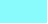 |
Coastal Forests |
| 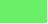 |
Coastal Forests - Mangrove |
| 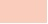 |
Dry Lowland Forest - Mixed Species |
| 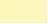 |
Dry Lowland Forest - Single Species |
| 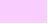 |
Man-made Forest |
|
Moist Highland Forest - Mixed Species |
 |
Moist Highland Forest - Single Species |
|
Moist Lowland Forest - Dense |
| 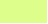 |
Moist Lowland Forest - Sparse |
|
Montane Forest |
| 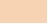 |
Wetland Forest - Swamp |
| |
| Agricultural Land |
| 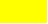 |
Dryland Arable - Food Crops |
| 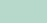 |
Estate Crops |
| 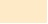 |
Shifting Cultivation Areas |
| 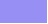 |
Smallholder Estate Crops |
| 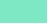 |
Wetland Arable |
| |
| Non-Productive Dryland |
| 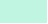 |
Bare Land |
| 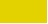 |
Grassland |
| 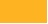 |
Savanna |
| |